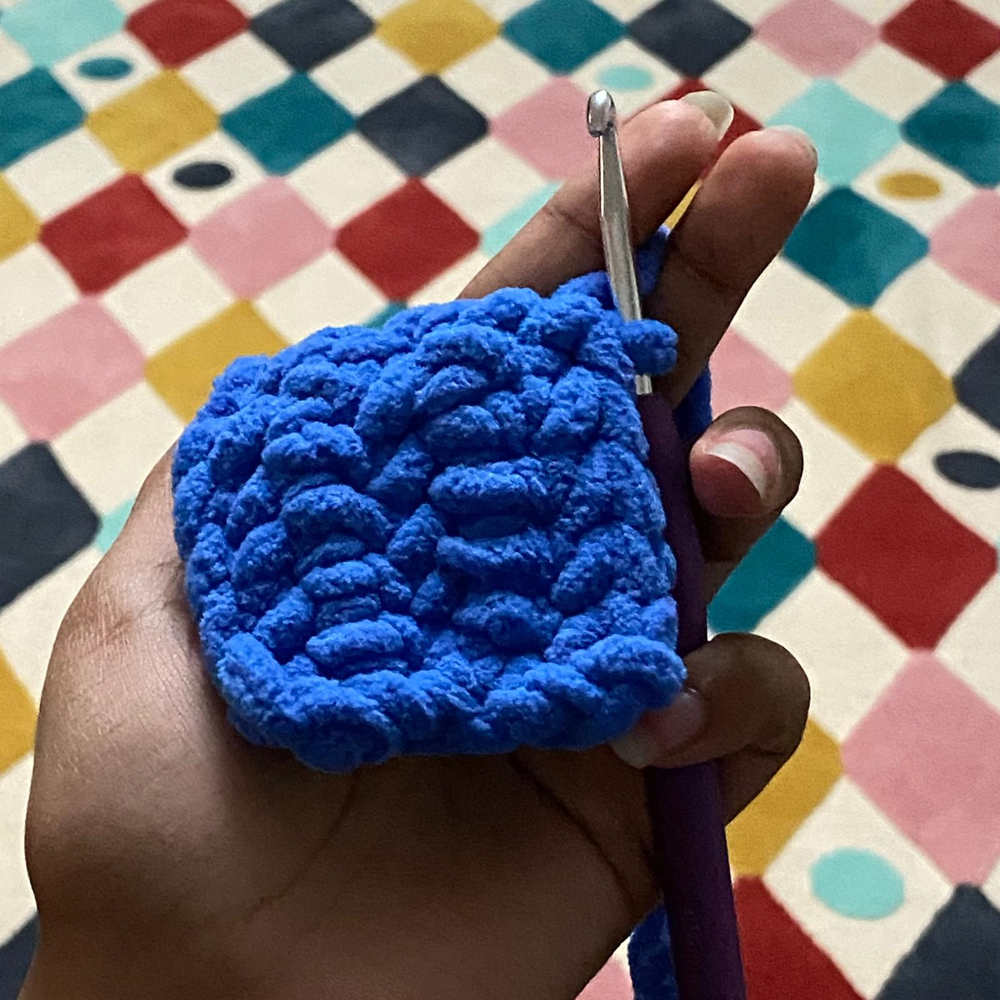

|

|
In order to make clothes such as scarves and sweaters it is increadibly important you know how to chain-stitch first, before learning how to create the square.
This is the extension of the chain stitch, so please refer to the chain stitch tutorial first.
1. Now that you have your chain stitch, you need to take your crochet hook and insert it into the stitch that is located 2 stitches away from your current stitch
2. Then repeat the loop around the crochet hook with the yarn and pull it through the chain stitch only.
3. You will now have 2 loops of yarn on your crochet hook. Now loop the yarn around your crochet hook once and pull it through the 2 loops.
4. Repeat this to the end of your chain-stitch. And then, on the same side, repeat this process.
As stated earlier, this will turn into muscle memory over time.
|